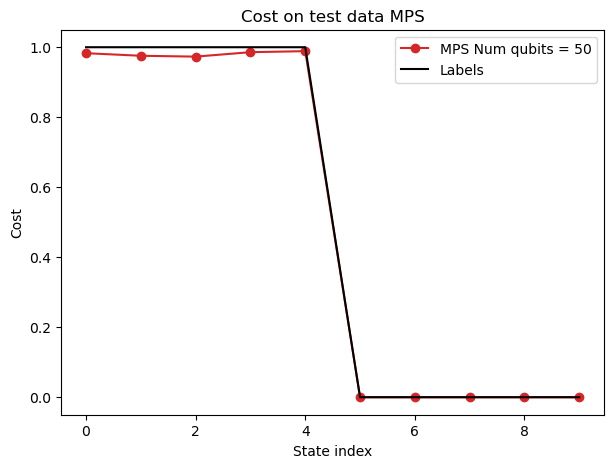
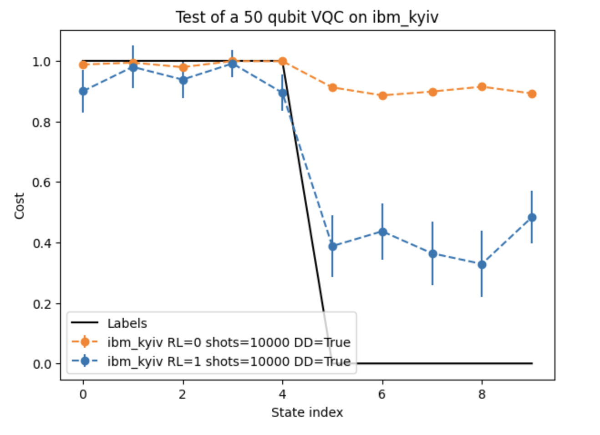
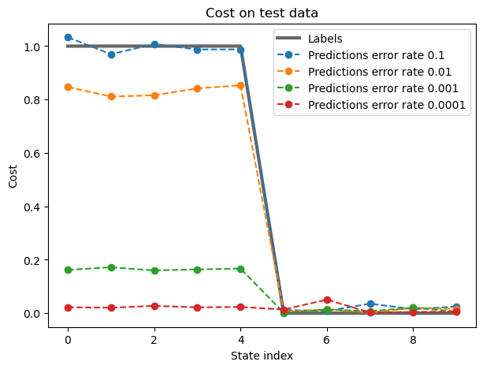
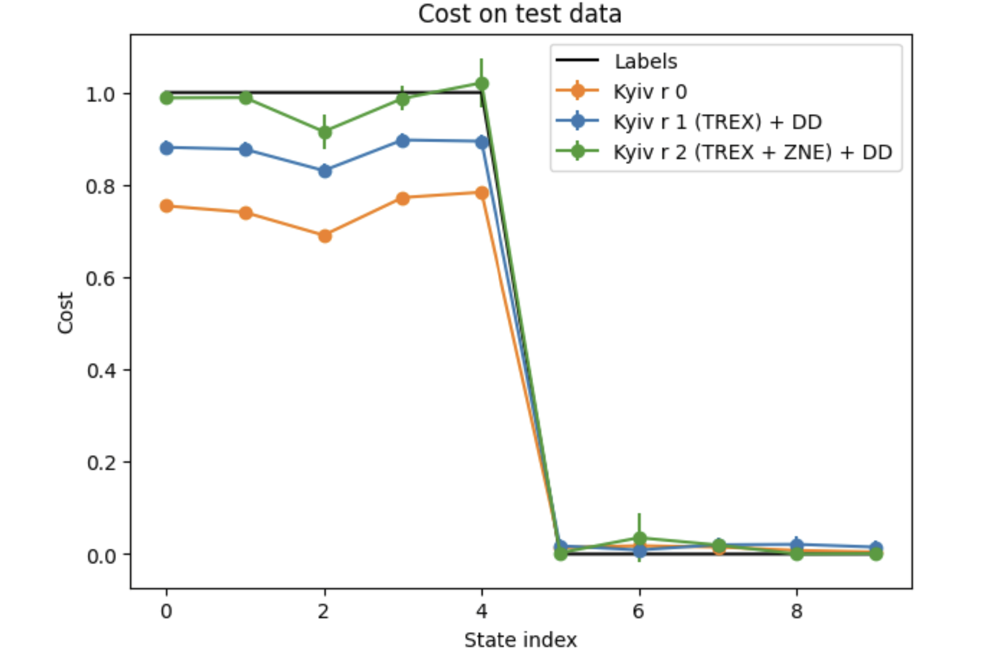
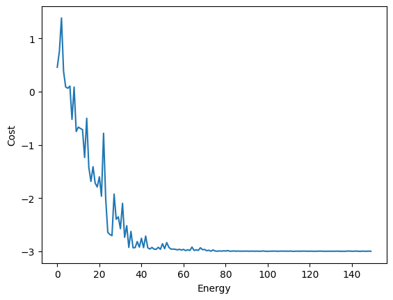
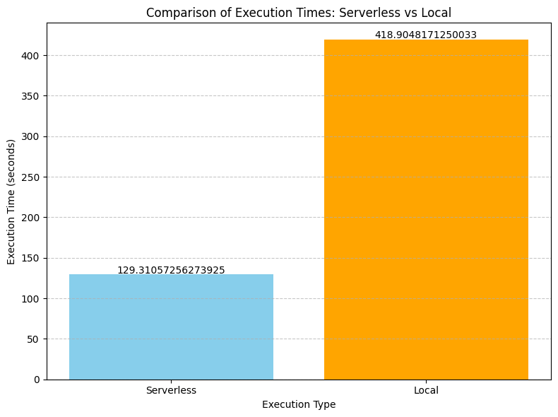
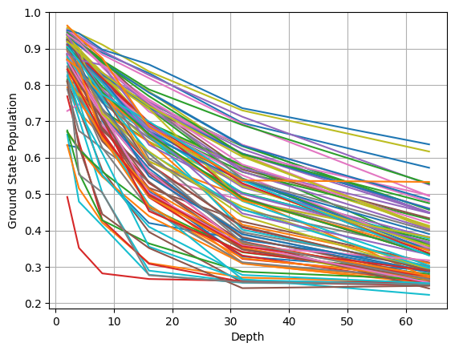
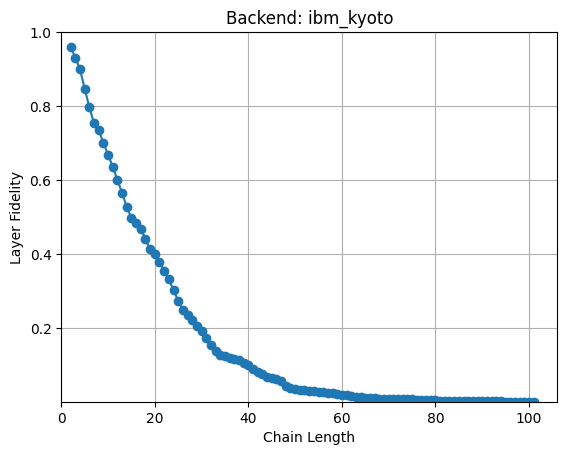
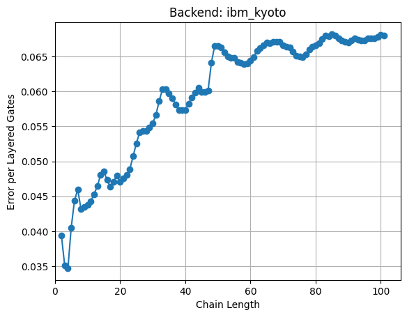
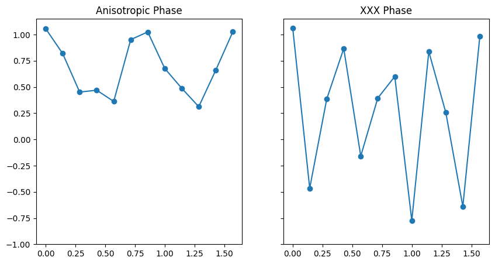

Quantum Computing Projects
My research in quantum computing encompasses various projects aimed at advancing our understanding and capabilities in this field. Below are some of the key projects I've been involved in:
Scaling a Variational Quantum Classifier to 50 Qubits
In this advanced project, I scaled up a Variational Quantum Classifier (VQC) to operate on 50 qubits, pushing the boundaries of what's currently achievable in quantum simulations. This project built upon the foundations of a previous lab, focusing on optimizing quantum circuits for large-scale implementations and testing them on both quantum simulators and real quantum hardware.
Cost on Test Data Using Matrix Product State Simulation

This plot shows the cost function results for our 50-qubit VQC using Matrix Product State (MPS) simulation. The red line with circle markers represents the cost for each test state, while the black line shows the true labels. The close alignment between these lines indicates the high accuracy of our classifier, even at this large scale. This simulation was crucial in verifying the correctness of our circuit design and parameter optimization before running on actual quantum hardware.
50-Qubit VQC Performance on Real Quantum Hardware

This graph demonstrates the performance of our 50-qubit VQC on a real IBM Quantum device. It compares two scenarios: one without error mitigation (orange line) and one with Dynamical Decoupling and TREX error mitigation (blue line). The black line represents the true labels. The error bars indicate the uncertainty in our measurements. This plot showcases the impact of error mitigation techniques in improving the classifier's performance on noisy quantum hardware, a critical aspect when working with large-scale quantum circuits.
Key Achievements:
- Developed an efficient method to create GHZ states on 50 qubits, reducing the two-qubit gate depth to 13 or less.
- Adapted the RealAmplitudes ansatz to a new connectivity map, optimizing it for the heavy hexagonal lattice of IBM Quantum devices.
- Generalized optimal parameters for a 50-qubit VQC, demonstrating an understanding of large-scale quantum circuit optimization.
- Successfully implemented and tested the VQC using Matrix Product State simulation, achieving high accuracy.
- Executed the 50-qubit VQC on real quantum hardware, comparing performance with and without error mitigation techniques.
This project demonstrates the potential of quantum computers to handle complex classification tasks at a scale that is challenging for classical computers. By successfully implementing and analyzing a 50-qubit VQC, we've shown how quantum computing can be scaled up for practical applications, while also highlighting the importance of circuit optimization and error mitigation in real-world quantum computations.
Variational Quantum Classifier: From Ideal to Noisy Quantum Systems
In this advanced project, I designed, implemented, and optimized a Variational Quantum Classifier (VQC) to distinguish between entangled and non-entangled quantum states. The project spanned from ideal simulations to execution on real quantum hardware, demonstrating the challenges and solutions in quantum machine learning.
Impact of Noise on VQC Performance

This plot demonstrates the impact of different noise levels on our VQC's performance. We tested the classifier with various error rates for RZ and CX gates, ranging from 10^-1 to 10^-4. The graph shows:
- The x-axis represents different quantum states (birds in our dataset)
- The y-axis shows the cost (closer to the label is better)
- Different colored lines represent various noise levels
- The black line indicates the true labels (0 for non-entangled, 1 for entangled states)
This visualization clearly illustrates how increasing noise levels degrade the classifier's performance, highlighting the importance of error mitigation in quantum algorithms.
VQC Performance on Real Quantum Hardware with Error Mitigation

This plot showcases the performance of our optimized VQC on actual quantum hardware (IBM Quantum device). It compares three scenarios:
- Orange line: No error mitigation
- Blue line: With Dynamical Decoupling (DD) and Twirled Readout Error eXtinction (TREX)
- Green line (if implemented): With DD, TREX, and Zero Noise Extrapolation (ZNE)
- Black line: True labels
The graph demonstrates the significant improvement in classification accuracy when employing error mitigation techniques. This real-world test underscores the critical role of error suppression and mitigation in achieving reliable results on noisy quantum hardware.
Key Achievements:
- Designed a VQC to distinguish between entangled and non-entangled 5-qubit quantum states
- Implemented efficient amplitude embedding and optimized the ansatz to reduce circuit depth by a factor of 10
- Analyzed the impact of different noise levels on VQC performance using simulated noise models
- Successfully executed the VQC on real IBM Quantum hardware
- Implemented and compared various error mitigation techniques including Dynamical Decoupling, TREX, and Zero Noise Extrapolation
- Achieved significant performance improvements on noisy hardware through error mitigation, with performance increasing from ~86% to ~98% in some cases
This project demonstrates the full lifecycle of developing a quantum machine learning algorithm, from ideal simulations to real hardware implementation. It highlights the challenges posed by quantum noise and the effectiveness of error mitigation techniques in real-world quantum computing applications.
Exploring Qiskit Serverless: VQE and Parallel Transpilation
In this advanced project, I explored the capabilities of Qiskit Serverless to deploy and execute quantum algorithms in a cloud environment. The project focused on two main aspects: implementing a Variational Quantum Eigensolver (VQE) and performing parallel transpilation of quantum circuits.
VQE Cost History

This plot shows the convergence of the Variational Quantum Eigensolver (VQE) algorithm executed using Qiskit Serverless. The x-axis represents the number of iterations, while the y-axis shows the cost (energy) at each iteration. Key observations:
- The decreasing trend in the cost indicates the algorithm's convergence towards the ground state energy of the system.
- The rapid initial decrease followed by a more gradual optimization demonstrates the effectiveness of the VQE approach in finding the minimum energy state.
- Executing this computationally intensive task on Qiskit Serverless allowed for efficient resource utilization without managing the underlying infrastructure.
Execution Time Comparison: Local vs. Serverless

This bar chart compares the execution times of parallel transpilation tasks performed locally versus using Qiskit Serverless. The plot highlights:
- The significant time savings achieved by leveraging Qiskit Serverless for parallel transpilation tasks.
- The ability of serverless computing to efficiently distribute and parallelize complex quantum circuit optimization tasks.
- The scalability of quantum workflows when using cloud-based resources, enabling the handling of larger and more complex circuits.
Key Achievements:
- Successfully deployed and executed a VQE algorithm using Qiskit Serverless, demonstrating the ability to run complex quantum algorithms in a cloud environment.
- Implemented a parallel transpilation workflow that optimized quantum circuits for specific backend architectures, exploring various optimization strategies simultaneously.
- Utilized distributed computing resources to significantly reduce the execution time of transpilation tasks compared to local execution.
- Gained practical experience in using Qiskit Serverless for both algorithm execution and circuit optimization, showcasing its versatility in quantum computing workflows.
This project demonstrates the power of combining quantum computing with cloud-based serverless architecture. By leveraging Qiskit Serverless, we were able to efficiently execute complex quantum algorithms and perform resource-intensive circuit optimizations. The significant speedup in transpilation tasks and the ability to run VQE in a managed environment highlight the potential of serverless quantum computing in scaling up quantum applications and making them more accessible for practical use.
Quantum Circuit Error Analysis
This project involved an in-depth analysis of quantum circuit errors using the Error Per Layered Gate (EPLG) and Layer Fidelity (LF) metrics. These measurements are crucial for understanding the performance and reliability of quantum processors at scale.
Ground State Population Decay

This plot shows the decay of ground state population for different two-qubit subsystems as the circuit depth increases. Each line represents a different subsystem, and the decay indicates how quickly errors accumulate in the quantum circuit. The exponential decay observed is characteristic of quantum error accumulation.
Layer Fidelity vs. Chain Length

This graph illustrates how the Layer Fidelity changes with increasing chain length in our quantum circuit. We observe a decrease in Layer Fidelity as the chain length increases, which is due to the accumulation of errors in larger quantum systems. This information is valuable for understanding the scalability of quantum algorithms and for choosing optimal circuit sizes for specific tasks.
Error Per Layered Gate (EPLG) vs. Chain Length

The final plot shows the Error Per Layered Gate (EPLG) as a function of chain length. As the chain length increases, we typically see an increase in EPLG, indicating that errors become more prominent in larger quantum circuits. This metric is particularly useful for comparing the performance of different quantum processors and for estimating the feasibility of running complex quantum algorithms on specific hardware.
Through this analysis, I gained valuable insights into the error characteristics of quantum circuits on real hardware. This information is crucial for developing error mitigation strategies, optimizing quantum algorithms, and pushing the boundaries of what's possible with current quantum computing technology.
Simulating Heisenberg Spin Chain Dynamics
In this project, I simulated the dynamics of a large Heisenberg spin chain using quantum circuits. The goal was to measure the average magnetization as a function of external field h for two different phases of the spin chain: the Anisotropic phase (Δ=-5) and the XXX phase (Δ=1).
Average Magnetization vs. External Field

This graph illustrates how the average magnetization (⟨Z⟩) changes with increasing external field strength (h) for two different phases of the Heisenberg spin chain. The left subplot shows the Anisotropic phase (Δ=-5), while the right subplot shows the XXX phase (Δ=1). The different behaviors observed in these phases demonstrate the rich physics captured by our quantum simulation.
Key Aspects of the Project:
- Implemented a 50-site Heisenberg spin chain using quantum circuits.
- Utilized the Qiskit SDK to create and optimize quantum circuits for time evolution.
- Employed the Li-Trotter approximation for time evolution operator decomposition.
- Implemented circuit optimization techniques, including layering of entangling gates and dynamical decoupling.
- Used the EstimatorV2 primitive and Batch execution mode for efficient computation on IBM Quantum hardware.
- Analyzed the results to observe the differences between the Anisotropic and XXX phases of the Heisenberg model.
This project demonstrates the potential of quantum computers to simulate complex quantum systems at a scale that is challenging for classical computers. By successfully implementing and analyzing a 50-qubit Heisenberg spin chain, we've shown how quantum computing can provide insights into quantum many-body physics.